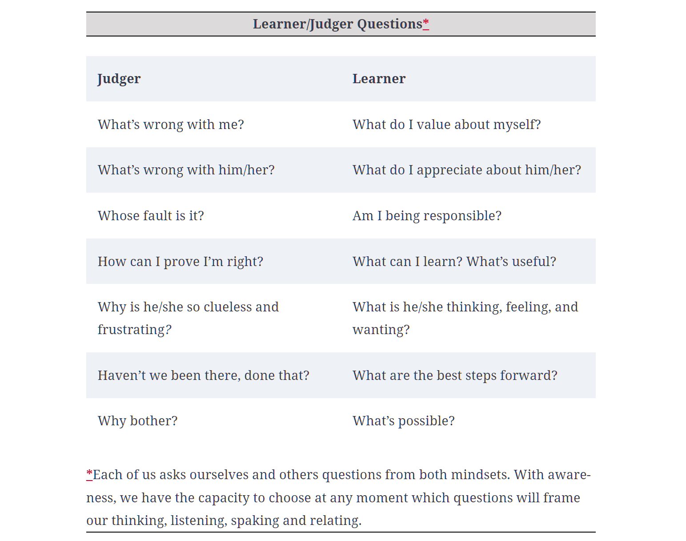
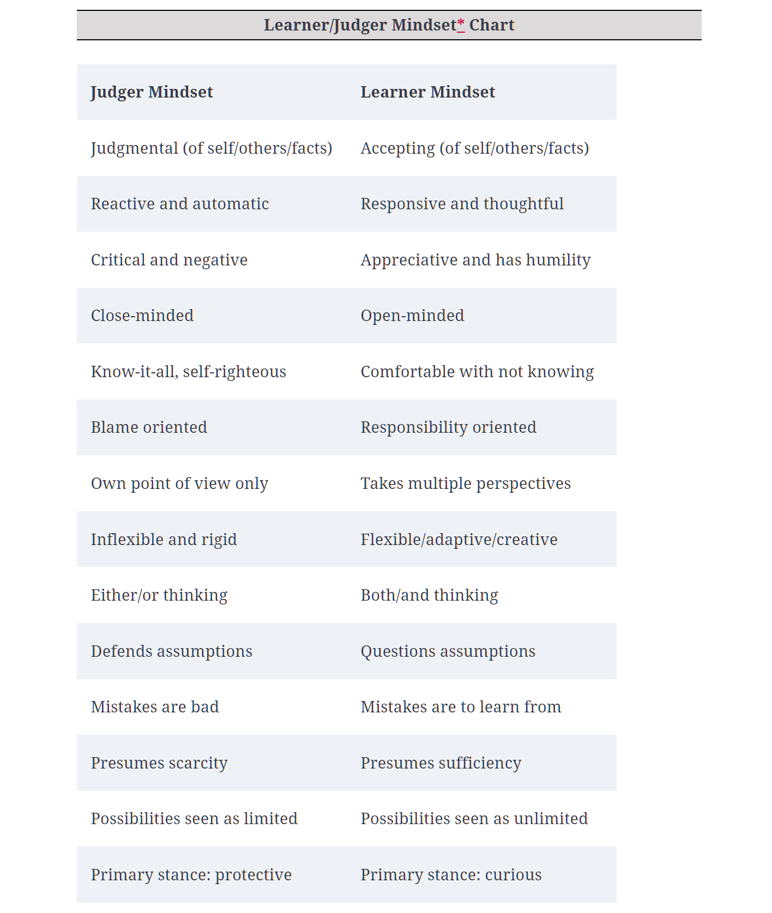
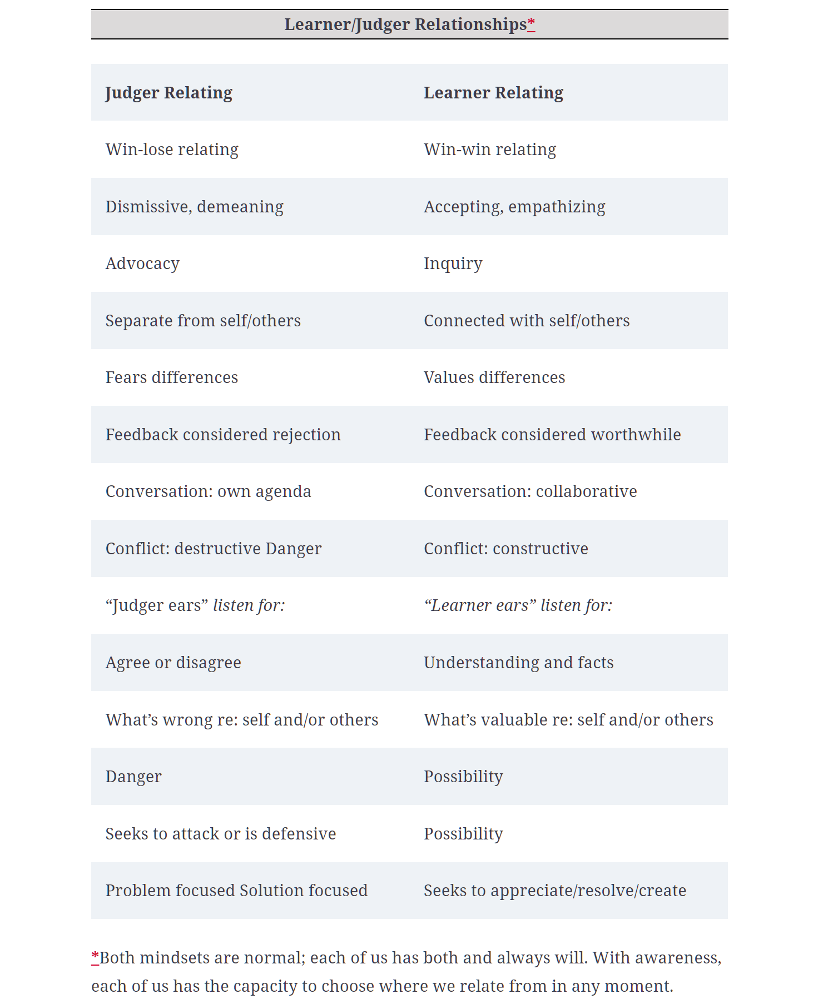

ANSHUL CHOUDHARY
Blogs
Question Thinking (QT)
Source: Book by Marilee G. Adams,
Change Your Questions, Change Your Life
Summarised by: Anshul Choudhary
The first striking statement that I came across while reading the book was: Great results begin with great questions. Like most, I belived that one needs to find the right answers or solutions to problems to get great results. Instead the author convinced me the way to go is to come up with better questions first. This is what they call QT, Question Thinking and it applies to any area of our life, personal or professional.
"Question everything!" - Albert Einstein
Question Thinking is a system of skills and tools using questions to expand how you approach virtually any situation. You develop the skills to refine your questions for vastly better results in anything you do. That begins with asking questions of ourselves and only then asking them of others. The QT system, can literally put action into your thinking—action that’s focused, creative, and effective. It’s a great way to create a foundation for making wiser choices.
Much of the time we’re barely conscious of asking questions, especially the ones we ask ourselves. But questions are a part of our thought process nearly every moment of our lives. Thinking actually occurs as an internal question-and-answer process. Not only that, we often answer our own questions by taking some action, by doing something.
Here’s an example. When I got dressed this morning, I went to your closet, or dresser and asked myself questions like: Where am I going? What’s the weather? What’s comfortable? Or even, What’s clean? I answered your questions by making a quick decision and then doing something. I selected some clothing and put it on. I am, in effect, wearing my answers.
When we get stuck, it’s natural to go on a hunt for answers and solutions. But in doing so we often unintentionally put up blocks instead of creating openings. There is a wonderful quote of Albert Einstein’s: ‘We cannot solve our problems with the same thinking we used when we created them.’ To solve our problems, we first need to change our questions; otherwise we’ll probably just keep getting the same old answers, over and over again.
New questions can totally shift our perspectives, moving us into fresh ways of looking at problems. Questions have even changed the course of events. Here is a dramatic example. Think about this. Long ago, nomadic societies were driven by the implicit question How do we get ourselves to water? Yet look what happened when their implicit question changed to How do we get water to come to us? That new question initiated one of humanity’s most significant paradigm shifts. It ushered in agriculture, including the invention of irrigation, the storage of water, digging wells, and eventually the creation of cities, often many miles from water. Just think of Las Vegas or Dubai. That new question changed peoples’ behavior, changed the course of history, and we can never go back.
The point is that questions drive results, they virtually program how we think and behave and what kinds of outcomes are possible. Consider three companies, each one driven by one of the following questions: What’s the best way to satisfy shareholders? What’s the best way to satisfy customers? What’s the best way to satisfy employees? In terms of a business, each question takes our mind in a different direction. Each question will have a different influence on priorities, everyday behavior, and strategies for achieving goals. Remember: Questions drive results. That’s as true in one's day-to-day professional life as it was for nomads thousands of years ago.
Whenever I'm interacting with other people as a leader, I want them to take initiative, ask questions, and come up with answers that maybe I hadn’t thought of myself. My accomplishments come from the total efforts of the people I'm working with, not just from my own solitary work. The skills that allowed me to create those dazzling technical breakthroughs in the past are not the same skills I need to be successful as a leader. In the words of Marshall Goldsmith, ‘What got you here won’t get you there.’
We’re working with people, not objects. Where people are concerned, there’s a certain magic in getting just the right mixture between questions and answers. I can offer this suggestion: Start by asking more and telling a lot less. The most effective communication is much more about asking and much less about telling. Unless you do ask questions, how can you make room for new information or find out what people are thinking or needing? Conventional wisdom has it upside down—in fact, even most formal communication courses usually focus on telling and not nearly enough on the importance of asking questions. It’s vital to get curious and ask more questions—not just about technical matters but especially about people. Start asking yourself questions like: What can I do to get people more engaged? What can I do to get people working collaboratively? What do others need from me? What do they have to contribute that I haven’t been noticing? Do I really listen to people’s questions and suggestions? Do people feel like I listen to their questions and suggestions? Do they feel respected by me? Do they feel invited to take risks and share their ideas?
All this may sound theoretical, ultimately these are all soft skills and you probably are looking to get results! However, don’t underestimate the power of soft skills. As somone once said, ‘We ignore soft skills at our peril. Developing these skills can be the difference that makes the difference between success and failure.’ In today’s world it’s not enough to have top technical expertise, or to have the best training in any of the so-called hard skills. Leaders need interpersonal and relationship-building skills, skills for communicating more effectively and constructively. Think of these so-called soft skills, or people skills, as the keystone of leadership success. The good news is that these are learnable skills.
The Choice Map
There is an image at the start of this article. This is the Choice Map. It helps us to become better observers of the two basic paths we take in life—the Learner Mindset path and the Judger Mindset path. As the name implies, the map is all about our ability to make choices. On the left side of the Choice Map, notice the figure standing above the Start arrow, at the crossroads between the two paths. That figure represents you and me—every one of us. In every moment of our lives we’re faced with choosing between the Learner Mindset path and the Judger Mindset path. Now look at the thought bubble above the other figures’ heads. Note how there’s a relationship between the kinds of questions these people ask, the path they’re on, and where each path takes them.
Every single one of us has Judger moments, including me. It’s a natural part of being human. The Choice Map is about observing oneself and others in a more conscious way; it’s about helping us to see what path we’re on at any moment. It’s not about labeling people or putting them in boxes. Think of the Choice Map as a tool that helps us to chart more effective paths through our lives—and for getting better outcomes in whatever we do.
At nearly every moment of our lives, we’re faced with choosing between taking the Learner or Judger path, whether we recognize it or not, we’re making choices moment by moment by moment. Those choices take us along the Learner path or the Judger Path. These are our mindsets. By choosing Learner mindset we can discover new possibilities. By jumping into Judger mindset we can eventually end up stuck in the mud.
Most of the time, we’re shifting back and forth between Learner and Judger mindsets, barely aware we have any control or choice. Choice begins when we are mindful enough to observe our own thoughts and feelings and the language we use to express them. This is the key to success— building the muscles of the observer self. Self-coaching is impossible without a strong observer! It’s as simple as asking ourselves, What’s going on? Where am I right now? Am I in Judger or Learner? Choice begins with observing our own thinking, and our own mindsets. It’s simpler than you think.
Imagine yourself standing at the crossroads between the Learner and Judger paths. Notice the words that circle that figure’s head—Anything that impacts us at any moment. That can be Thoughts, Feelings, Circumstances. The circumstances might be something unpleasant, such as getting an unexpected bill or a phone call with distressing news. Maybe a truck scraped the fender of your new car in the parking lot. The whole world begins to look like that mud pit at the end of the Judger path. Stuff happens. But circumstances that feel positive impact us, too. Your favorite team has an unexpected win. Your boss gives you a promotion, or your spouse sends an invitation to spend a romantic evening together. Things happen to us all the time. We don’t have much choice about that but we do have choice about what we do next about whatever just happened.
Observe your mindset and then choose. The secret of being really effective and satisfied in our lives begins with our ability to distinguish between Judger and Learner. That’s a key part of Question Thinking. Change your questions, change your thinking. Change your thinking, change your results. If only for a second, you become an observer watching a movie of your life. You simply notice whatever moods, thoughts, and behaviors are going on, without interpretation or judgment. That mindfulness sets the stage for just accepting what is, which also sets the stage for change, for choosing the mindset you’re going to operate from. This is very different from being so immersed in the situation that you can’t imagine any other possibility than the way it already is.
The Choice Map is about developing ways to make intentional, conscious choices rather than being controlled by events around us or by our emotions. These are essential leadership qualities for being aware, awake, and responsive to the business at hand. First, you just notice that something’s not quite right. Maybe you feel tense, or upset, or just plain blocked. That’s your observer self starting to click in, making you more aware. Then you ask yourself, Am I in Judger? Is this where I want to be? No one can help anyone else from a Judger place.
As soon as our observer self recognizes we’re in Judger, that’s when we begin to gain control and personal power. Now we have choice. We can choose to switch our thinking from Judger to Learner. There’s a specific kind of question that helps us here; it’s called a Switching question. That’s what provides the how-to for changing. As an example How else can I think about him? may work for you in a situation. The Choice Map simplifies the whole process for observing yourself. We discover more options and can choose more wisely, even under pressure. Choosing is easy when things are going well. It’s when we’re under pressure that we really get tested.
When two people are in Judger, the one who wakes up first has an advantage. That person can choose to go Learner and turn the situation around for both of them.
We begin with the questions we ask ourself, with the realization that the kinds of questions we ask literally put you either in Learner or Judger mode. And we’re most effective at virtually everything we do when we’re in Learner. That’s when we’re most resourceful and flexible and have the most options. But don’t worry if you take the Judger path every once in a while. That’s just human. As your observer self gets stronger and more dependable, you’ll find it increasingly easy to switch your questions and get back in Learner. That’s where things open up again and you go toward the results you’re seeking. It’s easier than we think because everything we need is already built in. Continually asking Switching questions is what helps us to build a resilient observer and a robust Learner mindset. And along the way you’re building your immunity to Judger mindset.
The signals for catching yourself in Judger are difficult to argue with, since they’re your body’s reactions and your moods. The clues that we are in Judger are our own moods and attitudes— self-righteousness, arrogance, superiority, and defensiveness. For example, you might be thinking, I sure showed that guy! Or, Maybe that’ll teach him to listen to me next time. Or, what an idiot that so-and-so is! I’ve learned that any time I get into negative moods, Judger questions and attitudes are involved. Once I observe this state in myself I can change my questions and turn things around pretty easily, for a very different result. Either you have your questions, or your questions have you.

When we listen to Judger questions, we may feel Hopeless and helpless. Pessimistic. Negative. Depleted. Depressed. Uptight. Victim. Loser. When we listen to Learner questions, we may feel Open. Lighter. Upbeat. Curious. Energetic. Optimistic.
With Judger mindset, the costs can be tremendous. The future can be only a recycled version of the past. And with the Learner program the power is on. The juice is flowing. You can actually make a new future for yourself.
Exercising judgment is about making good choices. Call that discernment, or acuity, which is essential in a professional job. So we're not talking about judgment in that sense of the word. We're talking about being judgmental, as in fault-finding or dwelling on the negative or being critical. Judger and judgment are two very different things. In fact, Judger mindset is the enemy of good judgment. When we’re judgmental, brain activity gets spikey; the big muscles of our bodies prepare themselves for fighting or running. In some cases we freeze; our brains just shut down, and it becomes difficult to think at all. It’s the classic fight-or-flight response, with all our energies going in the direction of running away, putting up a good fight . . . or shutting down in resignation or defeat. Those are all variations of our survival mode responses. Using good judgment is the opposite of all this. It’s a shame those words—judgment and judgmental— even sound alike. One of my dictionaries defines judgmental as ‘attacking self or others.’ Nothing could be more different from exercising good judgment. Judger has two faces—either we’re being judgmental toward ourselves or we’re being judgmental toward other people.
Remember that slipping into Judger is just part of being human, especially when things aren’t going well. In this respect, we’re all recovering Judgers. No doubt about it, our Judger nature can be a bit addictive. And the more we indulge it the more it becomes a habit and takes over. While it’s true we can never get rid of Judger, we can learn to manage it, to just be with it. Once you can do that a whole new way of being becomes available to you. Awareness, commitment, compassion, courage, forgiveness, acceptance—with a dash of humor—that’s what it takes to keep recovering ourselves and resetting our course back to the Learner path.
The whole idea is to accept Judger and practice Learner, moment by moment by moment. This work is not about getting on the Learner path and staying there. That’s a pipe dream. Real personal power depends on how good we get at recovering from Judger once it takes over. That’s why I got such a kick out of that situation with my superintendent client. Sure I got hijacked by Judger, but the instant I realized it, I could rescue myself and get back on the Learner path. Sometimes it’s even fun to see how fast I can catch Judger and how fast I can recover.
Change begins with the person who wants the change. Either you have your Judger or your Judger has you.
Choice map illustrates fundamental distinctions between Learner and Judger mindsets. Ultimately, the message is pretty simple. Change your questions, change your results. This is core self-management know-how for every recovering Judger.
Switching Questions
That lane is the key to change. Once you notice you’re in Judger, you get to Learner by asking Switching questions.
Whenever you sense you might be in Judger, pause, take a deep breath, get curious, and ask yourself, Am I in Judger? Of course, the tricky part is that you have to ask that question nonjudgmentally! If the answer is Yes, I am in Judger, you can step onto the Switching Lane by asking simple questions like: Do I want to be in Judger? And Where would I like to be?. Is it easy? Not always, but it is simple. The Switching Lane takes you to the Learner path.
Many people spend more time in Judger than Learner. And they may be quite driven and productive. However, their success often comes with very high costs. People with an overactive Judger can drive themselves and everyone around them nuts, and eventually that lowers productivity, cooperation, and creativity. Not to mention morale! It’s hard to feel loyal to or trust someone who lives in high Judger most of the time. Having an overactive Judger can build resentment and conflict, whether with your family or your colleagues.
If you want people to be really engaged and involved, Learner is the path to take. An organization led by people in high Judger tends to have greater levels of stress, conflict, and people problems. Those kinds of leaders are not well equipped to be flexible and adaptable—or successful—in meeting challenges. And just imagine the havoc that Judger plays when you take that mindset home with you at night!
When we’re in Judger, whether at home or work, everything can seem like a roadblock, and always somebody else’s fault. There’s no power there. When that happens we need to go back to basic Switching questions, like: Am I in Judger? Will it get me what I really want? Where would I rather be? What am I responsible for here? Pause, take a deep breath, put yourself on the Switching Lane and you can step right onto the Learner path.
If we focus our Judger mindset on ourselves, for example, with questions such as: Why am I such a failure? we hurt our self-confidence and may even feel depressed. On the other hand, when we focus our Judger mindset on others, with questions such as: Why is everyone around me so stupid and frustrating? we tend to get angry, resentful, and hostile. Either way, with Judger, we usually end up in some kind of conflict either with ourselves or with others. When Judger takes control it’s impossible to find genuine connection, resolution, or any sense of peace. That’s why many mediators use the Learner/Judger mindset material with their clients, especially the Choice Map.
Blame is Judger. Responsibility is Learner. There’s a world of difference between them. Focusing on blame blinds us from seeing real alternatives and solutions. It’s almost impossible to fix a problem when operating from Judger blame. Blame can be paralyzing. Blame keeps us stuck in the past. Responsibility, on the other hand, paves the path for a better future. If you focus your questions on what you might be responsible for, you also open your mind to new possibilities. You’re free to create alternatives that lead to positive change.


When you can recognize Judger, distinguish it from Learner, and switch to Learner whenever you choose, that’s self-coaching, and you’re well on your way to taking charge of your life—at work and at home.
Switching is what makes it possible to change. Switching is where the action is! The ability to switch literally puts you in charge of change. Being able to nonjudgmentally observe your own Judger and then ask a Switching question—well, that’s about the most powerful and courageous thing anybody can do for themselves. It’s the operational heart of change, what many people call self-management, or self-regulation. Actually, combining the willingness and the ability to switch leads not only to change, it also makes us able to sustain change, because we’re observing and asking ourselves Learner questions moment by moment by moment. Switching mindsets can literally give us new eyes and new ears.
So those hot buttons that once might have triggered our reaction to fight or flee now signal us that we’re in Judger. We’re actually transforming triggers into signals. And we reach for a Switching question to reposition ourselves in Learner. We’re pulling our own strings instead of giving that power away to someone else.
There is this common observation that Learner can sound soft. Leaders have to be strong and decisive. Leaders have to act tough and make the tough calls. How being more of a Learner can help us do that? Doesn’t Learner slow things down? Work is just one pressure and deadline after another. Sometimes we'are staggered by the amount of things we need to get done and how fast they have to happen. If one had to be in Learner all the time, wouldn’t it take forever to get things done? Wouldn’t we end up more behind than ever?
There’s an important difference between ‘Learner tough’ and ‘Judger tough.’ You can get the job done from either position. However, a Learner leader displays the kind of toughness that builds loyalty and respect as well as cooperation and risk-taking.
Judger leaders are more likely to generate fear, mistrust, and conflict in the people around them.
How many times, when you were in a rush, have you made a mistake, blamed yourself or others, and then had to do it all over? How much extra time did that take? In your haste, how many times have you been impatient or impolite to someone and then noticed that he or she didn’t talk to you much after that? What’s the cost in time, results, and even loyalty when you treat people like that? That’s what happens when Judger takes over at work. Learner actually helps them save time and increase productivity. In fact, speed and efficiency are not at all the same thing. Judger puts speed bumps on efficiency as well as effectiveness! It sure seems like life would be a lot simpler if we
could all just recognize and accept Judger in ourselves, switch to Learner, and operate from there.
"It’s not differences that divide us. It’s our judgments about each other that do." - Margaret J. Wheatley
Learner begets Learner. And Judger begets Judger.
Even though we’ll never be pure Learners or saints, including with your team, we can learn to choose where we put your attention moment to moment. Any attention you give to Judger isn’t available to give to Learner. Accept Judger, practice Learner. Imprint those words on your brain. It’s as important for teams as it is for individuals.
Inquiring leaders genuinely cares about what people have to say. Not only does they ask Learner questions, they also listen with Learner ears. Their listening is focused by questions such as: What’s valuable here? What’s to be learned from that comment? How can this contribute to what we’re working on? The questions they listen with help their teams turn into Learner teams very quickly. They expect to find the treasure, they looks for it, and because of that they often find it.
The Choice Map can help us do this with our team, too. Look at it again. So far, we’ve been thinking about it as a guide for how an individual thinks, behaves, and relates. Now, let’s consider it as a guide for teams. Start thinking in terms of Learner teams and Judger teams.
Research has showed that low-performing teams are low on inquiry—that is, on asking questions—and high on advocacy—that is, on pushing a particular viewpoint rather than listening to anybody else. The research also showed that high-performing teams consistently had a good balance between inquiry and advocacy—that has to have been Learner inquiry and Learner advocacy. It means that people feel free to ask tough questions and have genuine open debate. They can even argue and have conflicts, yet the atmosphere remains essentially Learner. It’s a Learner Alliance when team members work together to stay on the Learner path. That’s completely opposite of what happens when members of a team go Judger and end up in what is called a Judger stand-off. That’s when each person just defends his own opinion and believes he’s the only one who is right. He turns a deaf ear to anyone else’s ideas. It’s like everyone is in Judger jail together. Nothing gets done, and everyone blames someone else. That’s the real cost of Judger when it takes over a team like that.
It usually takes effort and intention to turn the tide and become more naturally Learner. Think about it as deliberately training our brain to do things it doesn’t automatically know how to do. Like anything—learning to drive a car or operate a computer or learning to ride a bike—it requires close attention at first but soon becomes second nature.
"Creativity is bound up in our ability to find new ways around old problems." - Martin Seligman
"Poor leaders rarely ask questions of themselves or others. Good leaders, on the other hand, ask many questions. Great leaders ask the great questions." - Michael Marquardt
Tool 1: Empower Your Observer
Purpose: To cultivate the ability to be still, calm, and present with ourselves and others. This capacity is the foundation of equanimity that helps us to become more present, centered, resourceful, and strategic. The observer self is also the basis for self-reflection and the ability to engage in intentional change.
Discussion: Learning how to stand outside yourself and nonjudgmentally witness your thoughts, feelings, and actions. We all have this observer capacity. It is sometimes experienced as a feeling of watching a movie in which we are one of the actors, or simply witnessing our own actions from a great distance. The more we develop our observer capacity, the more in charge we can be of our thoughts, feelings, and actions— and the less likely we are to be controlled by people and circumstances outside ourselves. From the position of observer, we gain the ability to simply notice what is, somewhat detached from our own thoughts and feelings. We become more able to distinguish between our perceptions and opinions and what’s actually happening around us. It is a way of being more “mindful” of the role our own emotions, opinions, or attachments play in how we view the world. Many spiritual and philosophical traditions recognize this observer capacity as a natural ability that is strengthened by practices such as meditation or the ones described here. Switching into observer mode, to any degree, is an invaluable skill for negotiating change, making decisions, operating effectively under pressure, and relating well to others. From the observer self we are in an ideal position to recognize the kinds of questions we’re asking and to switch to Learner questions when we find ourselves on the Judger path.
In the most expansive sense, the observer is calmly asking a single Self-Question: What’s present now? As your observer becomes more refined and skillful, you will become better and better at recognizing when you’re in Judger and at simply accepting that this is momentarily where you are. It is this moment of “waking up,” noting where you are, that grants each of us the liberating power of true choice.
Tool 2: Use the Choice Map as a Guide
Purpose: To provide a visual summary and guide for noticing one’s Learner/Judger mindset as well as the questions, and the future, that each of these might lead to.
Discussion: You can think of the Choice Map as a mindfulness tool. The Choice Map helps you to become aware of the kinds of questions you’re asking—Learner or Judger—and to consider how you might change your questions for the best results.
Imagine that you are the figure standing at the crossroads on the left side of the Choice Map. Some thought, feeling, or circumstance has just occurred. It might be related to any area of your life, either professional or personal. Experiment by taking each path separately—that is, by asking yourself either Judger or Learner questions about this situation and carefully considering the results each might produce. If you land in Judger, consider what Switching question might allow you to step onto the Switching Lane and return to Learner territory. Looking at the Choice Map, you can simply ask: Where am I right now? Am I in Judger? Where do I want to be? What is my ultimate goal in this situation? Which path will take me where I want to go?
Tool 3: Put the Power of Questions to Work
A: INTERNAL QUESTIONS
Purpose: To become more aware of your Self-Questions and to increase the quantity and quality of your internal questions, the ones you ask yourself.
Discussion: When you get up tomorrow morning, do a little personal question research. Note what questions you’re asking yourself as you get dressed. Then, from time to time throughout the day, ask yourself what questions might be driving your behavior in that particular situation, both in terms of your own actions and in terms of your interactions with others. It may take some patient observing to recognize those behavior-generating questions, but stay with it until you are able to recognize the influential role that Self-Qs play in your life.
As a second piece of question research, notice your responses to situations that come up throughout the day. Is your first thought a statement (an answer), or is it a question? If your first thought is a statement, experiment with changing it into a question; notice how shifting from a statement to a question changes your mood, actions, or interactions. Notice any correlations between your statements or questions and the kinds of experiences and results they produce.
B: INTERPERSONAL QUESTIONS
Purpose: To become more aware of the questions you ask others and to be mindful of their possible impact. Also, to increase the quantity and quality of the questions you ask.
Discussion:
Asking questions is important in order to:
- Gather information
- Create understanding and learning
- Search for and challenge assumptions
- Build, improve, and sustain relationships
- Clarify and confirm listening
- Stimulate creativity and innovation
- Resolve conflicts and create collaboration
- Set goals and create action plans
- Explore, discover, and create new possibilities
Approximately what is the ratio of questions you ask compared to statements you make (your ask/ tell ratio)? Do your communications with others involve more telling than asking? In at least one conversation today, practice asking questions much more and telling or advising much less. What do you notice from this experiment?
Recall a time when a particular question made a positive difference in your personal or professional life. It could have been a question you asked yourself or one that someone asked you. What was the question? What was the result? And what was it about the question that made such a difference?
Tool 4: Distinguish Learner and Judger Mindsets and Questions
Purpose: To help us to distinguish between our Learner and Judger mindsets moment by moment and notice how each affects our thinking, actions, relationships, and results.
Discussion: Look at the Judger column of the Learner/Judger Questions and notice how the questions affect you physically, emotionally, and intellectually. If you’re like most people, Judger questions may lead you to feel fearful, deenergized, negative, tense, or even a little “blue.”
Now it’s time to switch to Learner. Take a deep breath, let go of Judger, and then slowly read or listen to the Learner questions on the right side of the chart. Notice how you feel now. Many people report that Learner questions leave them feeling energized, optimistic, open, hopeful, and more relaxed. They feel encouraged to look for solutions and possibilities. As one workshop participant noted, “When I’m looking with Learner eyes, I feel hopeful about the future.”
You may discover, how questions associated with these two mindsets put you in distinctly different moods—and that these different moods position you to think, act, and behave quite differently. You may also discover that the world of experience and possibility is different in Learner than it is in Judger.
Explore how one or the other mindset affects how you interact with the people around you. How does Judger mindset—yours or theirs—affect communications with a colleague, spouse, child, or friend? Then ask yourself about the impact of Learner mindset — yours or theirs—in similar situations.
Tool 5: Make Friends with Judger
Purpose: To become more aware and accepting of Judger mindset in ourselves and others so that you can learn to just be with Judger rather than reacting to it.
Discussion: Although it may seem counterintuitive, the more accepting and “friendly” we can be toward Judger—in ourselves and others—the more liberated we become to make the best choices in any situation. Our awareness and acceptance of Judger is so crucial because it strengthens our ability to switch to Learner. It is in Learner that we are most centered, resourceful, strategic, and connected with others.
Keep a journal and jot down times when you catch yourself and/or others in Judger. Include any actual Judger questions you notice yourself asking. You might also include any physical sensations or moods you associate with Judger.
Place a rubber band around your wrist and snap it lightly any time you notice you’ve been hijacked by Judger. Then, each time you snap the rubber band, smile and congratulate yourself for your increasing awareness of Judger!
Allot a short period in some neutral situation, such as watching TV, to purposefully be as Judger as you possibly can be. For example, you might be openly judgmental or critical of a newscaster’s hair style, voice quality, or clothing. This will heighten your awareness of Judger and therefore your ability to choose switching to Learner.
Don’t go Judger on Judger! When you recognize that you are being judgmental about your own Judger, or someone else’s, just step back and congratulate your observer self for doing its job. That’s what gives you the freedom to choose.
Recognize that every time you do these practices you reinforce your observer self and your ability to operate from Learner. This is one of the many benefits we accrue simply by noticing and accepting Judger!
Tool 6: Question Assumptions
Purpose: To avoid making mistakes and suffering unintended consequences based on false or incomplete information, both in your own thinking and in your interactions with other people at work and at home.
Discussion: Faulty assumptions undermine effective communication and creative thinking. They make it impossible to build or maintain satisfying relationships.
To make an assumption is to believe, without necessarily any basis in fact, that something is true. False assumptions can sabotage our efforts to achieve our goals and deepest desires. After bringing to light any blind spots in our assumptions, we gain new insights and creative possibilities that allow us to move forward in more positive ways.
How do you assess the accuracy of your own assumptions so they don’t trip you up—resulting in your committing assumicide? First access the courage and willingness to notice and examine your assumptions. The habit of asking skillful questions, both of ourselves and others, helps us uncover blind spots and discover valuable new information, perspectives, and possibilities.
Think of a situation in which you are stuck, frustrated, or where you are seeking change or different results. Use the following list of assumption-busting questions to help you unearth faulty assumptions that might be blocking or hindering your success. For best results, consider each question thoroughly and write down your responses. Often, the act of writing stimulates deeper reflection and discoveries.
- What assumptions am I making about myself?
- What assumptions am I making about others?
- What am I assuming from the past that may not be true now?
- What am I assuming about available resources?
- What am I assuming about what’s impossible—or what is possible?
Tool 7: Take Advantage of Switching Questions
Purpose: To facilitate easier course corrections from the Judger path onto the Learner path.
Discussion: Switching questions are a special kind of Learner question that depends first on being able to observe Judger. Ask Switching questions whenever you finds yourself in Judger. The Choice Map helps to remember this shortcut from Judger back to Learner.
Think of Switching questions as “rescue,” “turnaround,” or “course-correction” questions. They can literally rescue you from Judger experiences or consequences. Switching questions can give you the opportunity not only to choose a new course but sometimes also to make major breakthroughs. Just as with developing any other new ability, the more you use Switching questions the better you get at it.
By their very nature, Switching questions are from-to questions, meaning they can carry us from Judger to Learner. We all use Switching questions whether we realize it or not; the more aware we are of using them, the more predictably we are able to choose them at will.
The best Switching questions are those that feel most natural and accessible to you. These are the questions you most easily and consistently reach for and use. The more “grooved in” they are, the more effective they will be. The following list of Switching questions includes some contributed by participants in workshops over the years.
- Am I in Judger? (This awareness is always first.)
- Is this what I want to be feeling?
- Is this what I want to be doing?
- Where would I rather be?
- How can I get there?
- Is this working?
- What are the facts?
- How else can I think about this?
- What assumptions am I making?
- What is the other person thinking, feeling, and wanting?
- What humor can I find in this situation?
- What’s my choice or decision right now?
Add other switching questions as you think of them.
Think of a past situation that was difficult or frustrating for you but that you managed to turn around. Think about what your Switching questions might have been in those situations. Why did they make a difference? When you discover the questions you asked intuitively, you’ll be able to use them more intentionally, skillfully, and successfully.
The ABCD Choice Process—Pick a current challenging situation in which you desire a change and follow the ABCD format described.
ABCD Choice Process
A Aware
Am I in Judger? Is this working?
B Breathe!
Do I need to step back, pause, and gain perspective?
C Curiosity
What’s really going on (with me, others, the situation)? What am I missing?
D Decide
What’s my decision? What do I choose?
Tool 8: Build Learner Teams
Purpose: To learn about the benefits of applying Question Thinking and the Learner/Judger distinctions for teams as well as for organizations.
Discussion: The experience of working on teams can be challenging, and people often deal with these difficulties in Judger ways. They might stop listening, try to push their own agenda, or just blame others when things don’t work out. They could go Judger on themselves by assuming they have nothing to contribute, by shutting down, and/or by not fully engaging. Or they could become overtly demeaning or critical of another person or of others’ ideas. Whatever the case, nobody wins. By introducing the notion of Learner teams, each participant can follow guidelines to suspend Judger and simply step into Learner, which has a positive effect on everyone’s experience, productivity, and results.
Ask people whether they’ve ever been on a Judger team. (They usually laugh.) Then ask if they’ve ever been on a Learner one. Then simply ask them to describe the differences in terms of experience, collaboration, productivity, and results.
Show people the Choice Map and have a conversation about the effects of Learner and Judger mindsets on the success or failure of the team. Include the notions of Judger costs and Judger stand-offs in your conversation. Then introduce the importance of a Learner Alliance and discuss what it would take for your team to create and commit to that.
Ask people on your team to generate guidelines based on the Choice Map about how best to communicate and collaborate during meetings. Do this as a group process, encouraging each person’s contribution.
Tool 9: Create Breakthroughs with Q-Storming®
Purpose: To empower collaborative, creative, and strategic thinking that can lead to breakthroughs and more successful results.
Discussion: Q-Storming is most often used when breakthroughs are sought in decision making, problem solving, strategic planning, and innovation. It provides a Learner structure for collaborative and creative thinking. It is a tool for moving beyond limited thinking and advancing to novel and extraordinary solutions and answers. While Q-Storming is akin to brainstorming, the goal of this Question Thinking practice is to generate as many questions as possible. The expectation is that some of the generated questions will provide desired new openings in thinking. Typically, questions open thinking, whereas answers often close thinking down.
Q-Storming is based on three premises: (1) Great results begin with great questions; (2) most any problem can be solved with enough right questions; and (3) the questions we ask ourselves often provide the most fruitful openings for new thinking and possibilities.
Q-Storming is typically done with a group or team, especially when one is exploring ideas and possibilities. It is also used in goal-oriented conversations between two people, for example, in coaching, leadership, management, and sales. Q-Storming can be done in person or virtually, say, with a global team or a coaching client in a different geographic location.
The facilitator and the team focus on developing a clear goal and eliciting assumptions about it before the question-generation phase of Q-Storming. Often at the end, action plans are made or revised based on discoveries made during the Q-Storming session.
Question Guidelines:
- Questions should be first-person singular or plural, using “I” and “we.” You want new questions to think with, not necessarily to ask of someone else.
- Generate questions from Learner mindset and avoid Judger.
- Questions are mostly open-ended, not closed (“How can I?” rather than “Can I?”) and (“How can we?” rather than “Can you?”)
- Invite courageous and provocative questions, as well as “silly” and “dumb” ones.
Tool 10: Ask the Top 12 Questions for Success
Purpose: To offer a useful sequence of questions for individuals and teams so that they may think more comprehensively before making a change or embarking on a new direction.
Discussion: The goal is to integrate these questions into your everyday thinking. Then, when a challenge arises, you’ll be able to easily recall some of them. Not every question applies to every situation. That’s why you’ll want to develop a collection of your favorites and work with them on a regular basis. These questions can open and change your mind. This sequence of questions allows you to unveil new choices, options, and possibilities you might otherwise have missed.
Think of a situation in which you are stuck, frustrated, or want something to change. Within that situation, you can ask the questions on the following list from several perspectives. Ask them of yourself—What do I want? Ask them of other people—What do you want? Or ask them of those with whom you have an ongoing relationship—What do we want? Here’s the list:
- What do I want?
- What assumptions am I making?
- What am I responsible for?
- How else can I think about this?
- What is the other person thinking, feeling, and wanting?
- What am I missing or avoiding?
-
What can I learn . . .
- from this person or situation?
- from this mistake or failure?
- from this success?
- What questions should I ask (myself and/or others?)
- How can I turn this situation into a win-win one?
- What’s possible?
- What are my choices?
- What action steps make the most sense?
Keep this list in a handy place where you can refer to it often. If you ask these questions frequently enough, they’ll become a natural part of your thinking. They’ll help you to create more satisfying and successful results in your life every day!
Tool 11: Coaching Self and Others
Purpose: Coaches know that asking powerful questions of their clients is key to their success. This coaching tool spotlights special features of the QT methodology for coaching. Here we focus on the benefits of teaching the methodology to clients while using that same methodology to guide them through resolving the issues and goals they’ve presented.
Discussion: Simultaneously teaching the QT methodology to clients while guiding them through the issues and goals they’ve presented is an integral part of Question Thinking for coaching. As the client becomes increasingly skillful with these tools, and begins to experience their benefits first hand, the relationship between client and coach becomes increasingly egalitarian and collaborative. Through their shared knowledge of QT, coach and client are able to “speak the same language.” As with any coaching relationship, the message at the heart of QT-driven coaching is that the coach will not “fix” the client or the issue; instead, as clients develop skills with the tools and methods of QT they are better equipped to resolve issues and accomplish goals on their own. The coach provides the safe environment where clients gain practical experience with QT while applying it to their own issues and goals.
What clients learn in these coaching sessions makes a difference for outcomes in their current situation even as they are gaining skills for the future, to self-coach and be more effective at whatever they do. This extends to the client’s greater effectiveness with other people both inside and outside the working environment.
In the beginning of a coaching engagement, along with developing a trusting relationship and helping clients to articulate their goals, I introduce Question Thinking and the Choice Map. I explain that I’ve found that these tools and methods help people to better understand what’s been getting in the way of accomplishing their goals. The same tools serve as guides for developing skills for moving beyond any present limitations.
The language and concepts of QT are easily integrated into ongoing conversations with clients. You have probably already noticed how the Choice Map can help you to orient clients in terms of where they are in the Learner-Judger spectrum; for example, when clients have a Choice Map in front of them—especially important in phone or other electronic communication—the coach can ask, “Where would you locate yourself on the Choice Map right now? Are you in Judger? Are you in Learner? Are you in the Judger Pit?” A quick glance at the Choice Map, where these mindsets are graphically expressed, is instructive for both coach and coachee.
Learning Question Thinking is enhanced and accelerated whenever the client is able to immediately experience its benefits first-hand. And as the client’s experience and skill with QT grows, so also does the collaborative nature of the coaching sessions grow and deepen.
As clients become more self-aware and skillful at self-management and self-coaching, they are also gaining skill and confidence for building more effective relationships with colleagues and teams outside the coaching relationship. Clients frequently report on how simple it can be to introduce others to QT. As an example, the following note, which came from a coach who’d attended one of my workshops, demonstrates how quickly people can catch on to using the Choice Map: I was with some friends at a restaurant and one of them expressed concern about her relationship with her daughter and how they were always arguing. I pulled out a copy of the Choice Map that I carry in my purse and we began looking at ways it might help her. She studied it for a moment and suddenly her eyes lit up and she exclaimed, “I’ve been in Judger with my daughter!” She immediately started reflecting on ways her Judger mindset had triggered her daughter’s defensiveness and anger. Then we talked about Switching questions and she said, “This is like a huge weight lifted from my shoulders.” Later, as we got ready to leave she pointed to my Choice Map and asked shyly, “May I keep this?” Oftentimes, people with no previous exposure to the Choice Map respond to it by saying, “This just makes perfect sense!” For anyone already familiar with Question Thinking, the Choice Map quickly becomes a powerful organizing image for understanding, retaining, and applying the entire methodology. As a client recently told me, “The image of the Choice Map is like a mental magnet that helps me recall everything you’ve taught me.” The map provides coach and client with a shared vocabulary for working together, while at the same time empowering clients with a highly effective self-coaching tool they can use on an ongoing basis.
Recall a past coaching session, before you learned about QT, when you were less than satisfied with the outcome. Perhaps you have found yourself replaying that session in your mind, thinking you should’ve, could’ve, would’ve done it better . . . if only. Now imagine that you are redoing that session, this time introducing the Choice Map to help your client to articulate what might have been getting in his way and to better understand where he and others might have been coming from in their problematic situation. How do you think introducing the Choice Map might have made a difference in the success of that session?
It’s good to keep in mind that even the most experienced coaches can go Judger—yes, even about their clients. This practice is an opportunity to reinforce your own Learner mindset by checking in with yourself whenever you are in a coaching session or otherwise sharing the Choice Map. You may discover you have some Judger going on with whomever you’re speaking to—whether it’s a client, a friend, a colleague, or a family member. On rare occasions, I’ve seen people share the Choice Map in a subtle Judger way, aiming to show how the other person is wrong and is in Judger. If this ever happens to you, it’s time to reset yourself to Learner or postpone sharing the Choice Map or talking about the mindset work until you can do so from a Learner place.
As you get ready to share the Choice Map with another person, consider where you would locate yourself on the map just then. If you discover some Judger you could ask yourself: Why am I in Judger? What Switching questions could I ask myself to move into Learner? What are my goals in sharing the Choice Map with this person?
Use this exercise to explore strategies for staying in Learner throughout any conversation or session, whether it’s with a colleague, friend, family member, or client.
Tool 12: Leadership—The Power of Question Thinking
Purpose: To spotlight special contributions of the QT methodology for leadership development, focusing on the methods, benefits, and outcomes of developing as an inquiring leader.
Discussion: In today’s business and organizational life there is increasing awareness of the need for leaders who possess highly developed self-management and social skills. Daniel Goleman, author of Emotional Intelligence, stated that as we become focused more and more on intellectual and knowledge-based services, people skills become “ever more important, in teamwork, in cooperation, in helping people learn together how to work more effectively.” David Rock reflected in Fortune magazine: “The ability to work well with other people in a group depends on our ability to appreciate other individuals’ emotions. A boss who knows what his staff members really want and care about will be able to design a better team environment than one who is simply focused on the elements of a project.
Inquiring Leadership abilities include being open-minded and curious as well as decisive. Inquiring Leaders are self-aware, self-reflecting, and committed to continuous development, both for themselves and for those around them. They are adaptive, creative, and comfortable with “not knowing” and with not having all the answers. They think, collaborate, and lead strategically, advancing “ready-aim-fire” thinking and behaviors while avoiding “ready-fire-aim” ones. And of course, they intentionally ask many questions of themselves and others.
Following the tenets of good coaching, inquiring leaders understand that asking questions and listening deeply make them smarter and more connected while simultaneously empowering those around them. They use Learner questions to produce powerful results both in their own thinking and decision making, and in communicating with others. They recognize the dangers and missed opportunities of not asking important questions. And they know when to stop questioning and take action!
Inquiring leaders create what I call an intentional Learner culture where inquiry is highly valued and encouraged; they model and mandate inquiry practices throughout their organization. They ask more and tell and advise less, thus inviting collaboration, creative thinking, and new possibilities. Their own words, actions, and behavior invite and encourage engagement, motivation, and commitment, promoting and inspiring trust, respect, and loyalty.
As simple as it may sound, the primary goal of this book is to provide ways for readers to build their self-awareness, self-management, and inquiry skills. QT helps us to become aware of our own Judger mindsets, to become adept at asking ourselves Switching questions, and to cultivate the skills to continually reset ourselves to Learner mindset. These self-management skills, illustrated by the Choice Map, are the heartbeat of inquiring leadership. The QT tools offer a way to be in training, getting better and better at building our ability to shift into Learner on purpose, and to grow our personal strength and competence. Using these tools leads to increased self-confidence, relaxed self-control, emotional dexterity, and the ability to be present and effectively responsive to people and circumstances—which is how inquiring leaders create a sustainable Learner culture.
Through using the tools and methods of Question Thinking, we learn to manage difficult situations and emotions, sometimes born of assumptions we’ve made. We develop a realization that Judger thinking cannot lead to effective leadership, either of ourselves or of others. You can practice this leadership training any time you wish. It’s as simple as recalling a leadership situation where your Judger prevented you from being as effective as you would have liked. As you recall this past experience, trace what occurred on the Choice Map, from the moment it started to the eventual resolution or end. What were the first signals that you might associate with an amygdala hijack, or what I’ve called a Judger hijack? Perhaps dry mouth, a tightening of the shoulders, back, legs and arms? Maybe you were aware of your heart beating, or you simply felt a certain jolt that you associate with having your buttons pushed. How quickly did you snap back with a counterdefense, moving down the Judger path as you did? Or maybe you suddenly found yourself in the Judger Pit, turning your Judger questions on yourself or on others. As you are remembering this past leadership experience, recall that the power of QT is in your questions and in your mindset, and in your ability to change the questions that are driving your thinking, feeling, and behaviors. As a coaching client commented: “Judger to Learner—I swear, when the pressure is on I can go back and forth between the two several times a minute. Question Thinking has made it possible for me to stand outside myself and watch it happen. . . . The Switching Lane—that’s where the action is, knowing what questions to ask to get back to Learner mindset.” This practice gives you an opportunity for a “do-over.” As you think about that leadership situation, look at the Choice Map and speculate about what Switching questions might have made a difference for you at the time. This is very much like what you practiced with Tool #11, except this time the context is a leadership situation. As you move along the Switching Lane, led by your Switching questions, note any changes you are experiencing—whether these changes are physical, intellectual, or emotional. As you merge onto the Learner path, what changes are you now experiencing? Are you more relaxed and breathing more easily? Are you beginning to think more lucidly and expansively? Maybe you even feel like you are more in charge, like you’re leading yourself instead of feeling like a victim of the person or situation that pushed your buttons.
You could also use the Choice Map and this practice to learn from a positive past leadership situation, large or small, that you are pleased about. What Learner questions contributed to your success? Remember that learning is equally valuable whether it comes from successes or failures. In the days to come, look for opportunities where you can apply what you have discovered in this book. Remember that leaders lead by example and also by empowering others. Whether or not you’re in a formal leadership position, you’ll always find areas of your life where you’ll encounter the challenges of leadership, be they in your family, with friends, or in virtually any social situation—but most important in leading yourself.